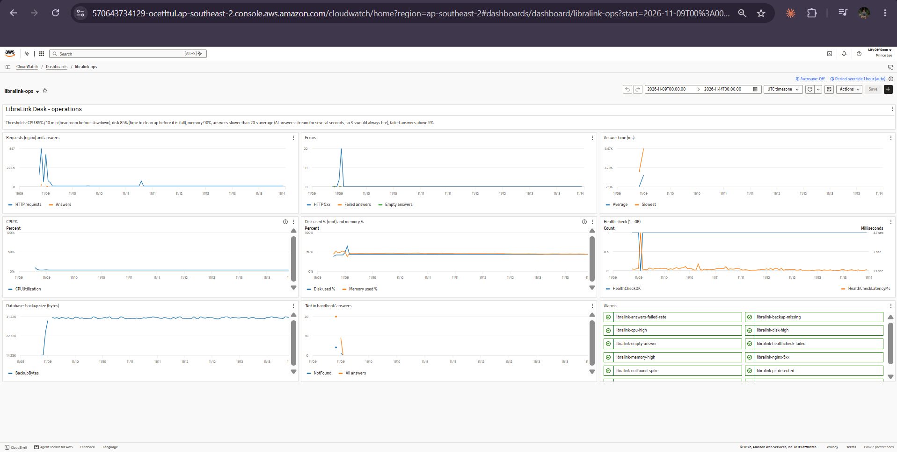
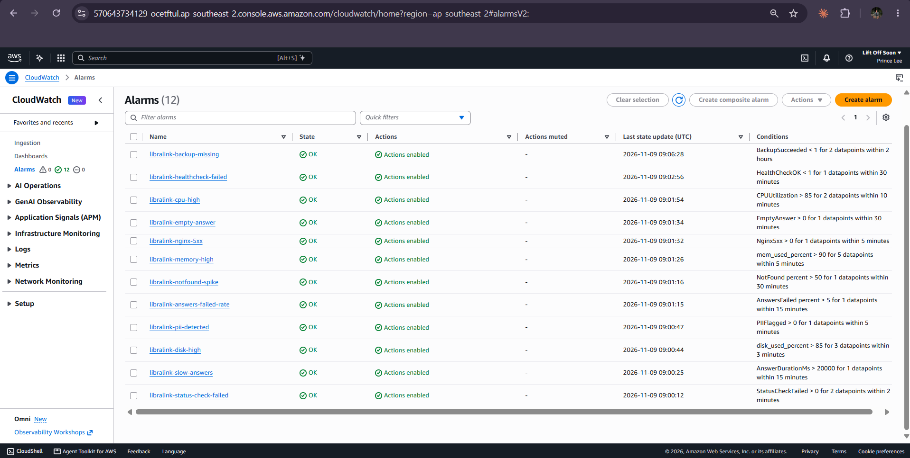
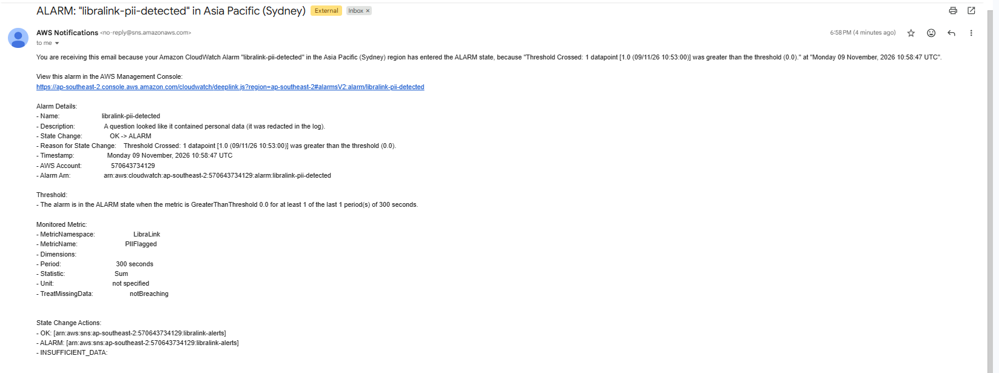
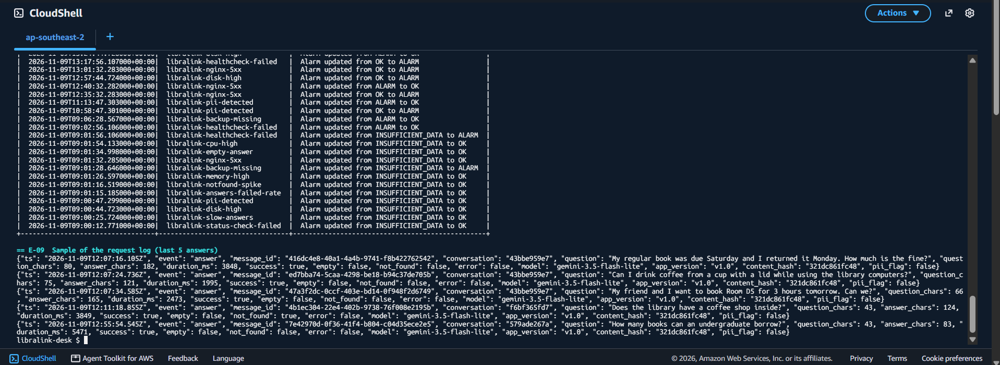
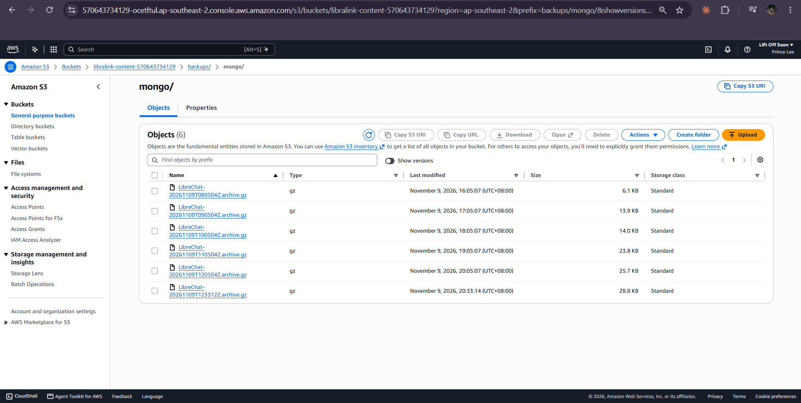
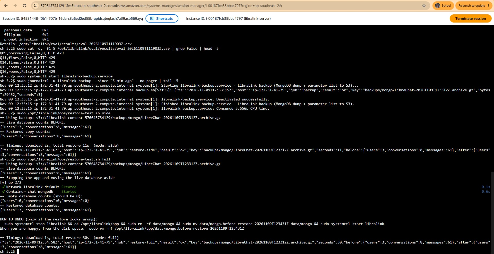
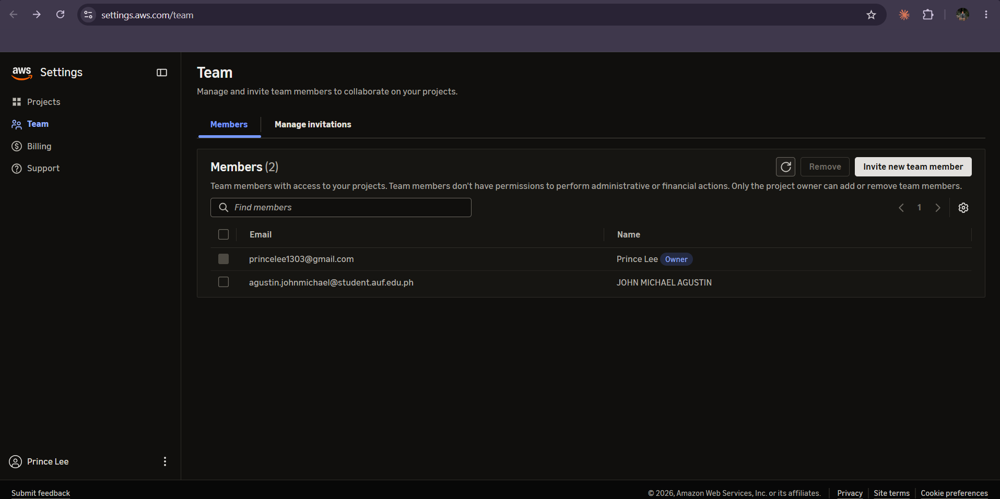
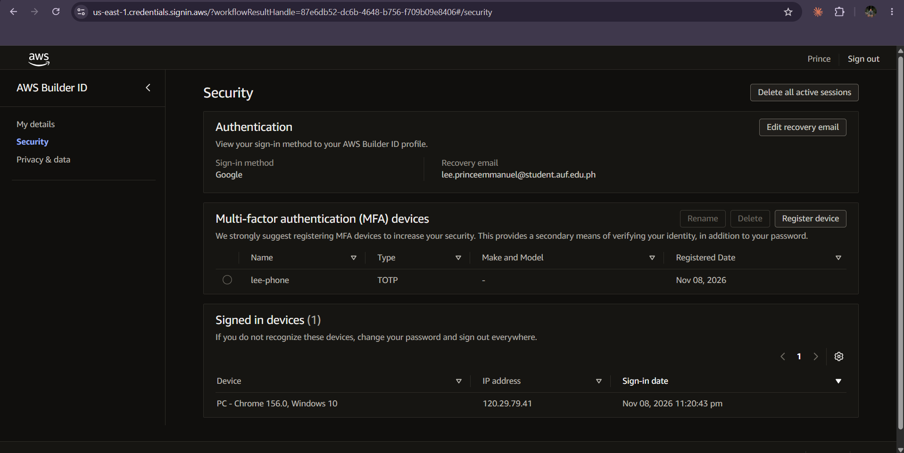
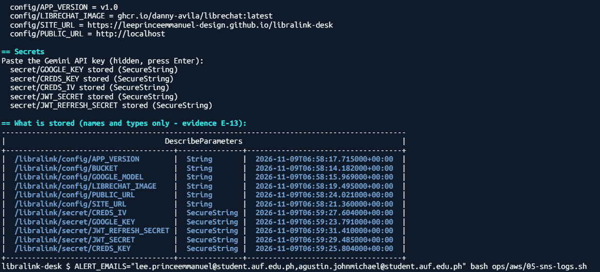
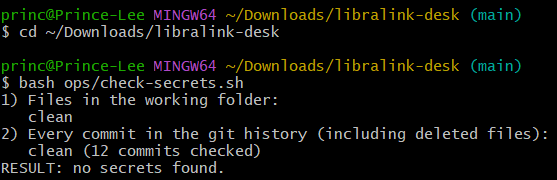

Monitoring, backup and restore, security
How we see that LibraLink Desk is working, how we get it back when it breaks, and how we keep the wrong people out.
1. Monitoring (WS-B)
The dashboard

evidence/E-06-dashboard.png: CloudWatch › Dashboards › libralink-ops, time range 1 day or 3 days, with real data in the graphs (ask the assistant some questions first).libralink-ops: requests and answers, errors, answer time, CPU, disk and memory, health check, backup size, "not in handbook" answers, and all alarms. Range: FILL: dates.Where the numbers come from
- EC2 basics (CPU, status checks) come from AWS automatically.
- Memory, disk and swap come from the CloudWatch agent on the server (
ops/cloudwatch-agent.json). - Answer metrics come from our request logger (
ops/exporter.py). Every minute it writes one JSON line per answer to the log group/libralink/requests; metric filters turn those lines intoAnswersTotal,AnswersFailed,EmptyAnswer,NotFound,AnswerDurationMsandPIIFlagged. That gives us the brief's "custom metric counting failed answers" (WS-B item 6) without changing LibreChat's code. - Request count and HTTP errors come from nginx's JSON access log (
/libralink/nginx). - Health check comes from a Lambda function outside the server (see Automation).
The alarms, and why each threshold
| Alarm | Fires when | Why this threshold |
|---|---|---|
| libralink-cpu-high | CPU > 85% for 10 min | The brief's starter value; short spikes during answers are normal, 10 minutes of it is a stuck process. |
| libralink-status-check-failed | EC2 status check fails for 2 min | Any failure means the machine or its host is broken. |
| libralink-disk-high | Root disk > 85% for 3 min | Same 85% as the brief, but checked every minute instead of hourly: our incident showed a disk can fill in minutes. |
| libralink-memory-high | Memory > 90% for 5 min | Brief's value; above this the app is close to being killed. |
| libralink-answers-failed-rate | > 5% of answers failed in 15 min | Brief's value; catches "up but not working" (e.g. a bad API key). |
| libralink-empty-answer | Any empty answer in 30 min | Brief's value; an empty answer is never correct. |
| libralink-notfound-spike | > 50% "not in the handbook" answers in 30 min (min. 4 answers) | If the handbook did not load, almost every answer becomes "not found". |
| libralink-slow-answers | Average answer time > 20 s over 15 min | We changed the brief's 3 s: AI answers stream for several seconds, so 3 s would fire all the time. FILL: our measured normal average was N s. |
| libralink-nginx-5xx | Any HTTP 5xx in 5 min | Replaces the load-balancer 5xx alarm (we have no load balancer). |
| libralink-healthcheck-failed | Health check failed, or did not run, in 30 min | Two missed checks in a row — the site is down for users. |
| libralink-backup-missing | No successful backup in 2 hours | Backups run hourly, so two missing hours means the automation broke. |
| libralink-pii-detected | A question looked like it held personal data | Our responsible-use check (WS-D item 4). |
The billing alarm from the brief's starter set is covered by our AWS Budgets alert (set on day 1). All alarms send to the SNS topic libralink-alerts, which e-mails both of us, and also e-mail when the alarm goes back to OK.

evidence/E-07-alarms.png: CloudWatch › Alarms › All alarms, filtered by "libralink", showing all 12 and their state.Proof that an alert reached a real person

evidence/E-08-alert-email.png: the "ALARM: libralink-disk-high" e-mail (from the incident) open in your inbox, with the date and time visible. Blur your e-mail address if you like.Request log

evidence/E-09-request-log.png: CloudWatch › Log groups › /libralink/requests, a few expanded JSON lines (question, duration_ms, success, model, app_version).Example line (format):
{"ts": "…", "event": "answer", "question": "How many books can an undergraduate borrow?",
"duration_ms": 3120, "success": true, "empty": false, "not_found": false,
"model": "gemini-2.5-flash", "app_version": "v1.0", "content_hash": "321dc861fc48", "pii_flag": false}
Log groups and retention: /libralink/app and /libralink/mongodb (container logs), /libralink/requests, /libralink/nginx — 14 days; /libralink/automation and /aws/lambda/libralink-healthcheck — 30 days.
2. Backup and restore (WS-C)
What would have to be restored
| Thing | Where it lives | How it is protected |
|---|---|---|
| Database (accounts, conversations, messages) | MongoDB container on the server | mongodump to S3 every hour, kept 7 days |
| Handbook content | S3 content/ | S3 versioning on; old versions kept 30 days; also in git |
| Settings | Parameter Store /libralink/config/* | Parameter history; list of names exported to S3 hourly; values also written in ops/aws/04-params.sh |
| Secrets | Parameter Store /libralink/secret/* | Parameter history (AWS keeps old versions). The Gemini key can be re-issued in Google AI Studio. CREDS_KEY/CREDS_IV mainly encrypt API keys that users store themselves, which we do not allow, so losing them does little harm. Losing the JWT secrets only logs everyone out. |
| The server itself | EC2 | Not backed up — rebuilt from code: ops/aws/06-ec2.sh + ops/bootstrap-ec2.sh + app/docker-compose.yml (brief WS-C item 6: "rebuilt rather than merely restored"). |
Backup settings

evidence/E-10-backups-s3.png: S3 › libralink-content-… › backups/mongo/ listing several hourly files, plus the bucket's Properties showing Bucket Versioning: Enabled (or the output of bash ops/aws/12-evidence.sh, section E-10).Why not RDS automated backups? LibreChat needs MongoDB, which RDS does not run, so the brief's alternative applies: "a scheduled dump to S3 kept for at least 7 days". Deletion protection's equivalent here is S3 versioning (a deleted backup can be recovered) and the instance role, which can write backups but cannot delete them.
The restore test
On FILL: date, time we ran sudo /opt/libralink/ops/restore-test.sh full. It stopped the app, moved the live database aside, started an empty database, restored the newest backup from S3 (FILL: file name), and started the app again. We then logged in and our earlier conversations were there.

evidence/E-11-restore.png: the terminal output of the restore test (counts before, empty, after, and the total seconds) AND a screenshot of the app after logging in showing old conversations in the sidebar.How much we could lose, and how long it takes
RPO (how much we would lose): up to 1 hour of conversations, because the database is backed up every hour; the handbook and settings, almost nothing, because S3 and Parameter Store keep versions. RTO (how long until it works again): FILL: N minutes measured for a database restore on a running server; rebuilding a lost server from our scripts adds about FILL: 10–15 minutes.
3. Security (WS-D)
Before and after
| Problem found | Before | After |
|---|---|---|
| Who can change things | Only the account owner's login, no MFA | Each person signs in with their own AWS login and their own MFA device; the partner was added through the console's Team page; no shared logins |
| Access keys | — | None at all: all command-line work is done in CloudShell, which uses the signed-in person's login |
| Traffic to users | Plain HTTP | HTTPS via CloudFront; HTTP redirected |
| Server exposure | Port 80 open to 0.0.0.0/0 | Port 80 only from CloudFront's managed address list; no SSH port; Session Manager for admin |
| Database exposure | Not published (LibreChat default) | Still not published: MongoDB is only on the private Docker network |
| Secrets | Would normally sit in LibreChat's .env file | In Parameter Store (SecureString); read into memory at start-up; git history scanned |
| Server permissions | — | Instance role limited to our parameters, our bucket's content/ and backups/, our log groups, metrics and one SNS topic |
| Audit trail | 90-day event history only | CloudTrail trail with log-file validation, own private bucket |
| Data at rest | — | Server disk encrypted (set in our launch script); S3 encryption; GuardDuty on |
| Public sign-up | Anyone could register | Registration off; we create accounts |
Each control, and the risk it addresses
- Own login and MFA for each person — a stolen password alone is not enough to get in, and CloudTrail shows which of us did what.
- Least-privilege roles for machines — the server and the health check each have a role with only the permissions they need; no person and no program holds a long-lived access key.
- No keys in code or git history — a public repository cannot leak our Gemini key;
ops/check-secrets.shscans every commit. - Personal-data check — questions that look like they contain an e-mail, phone or ID number are redacted in our logs and raise an alarm, so we notice if anyone sends personal data to the external model.
- Server only reachable from CloudFront, database not reachable at all — attackers cannot skip HTTPS or reach MongoDB directly.
- Least-privilege server role — if the server were taken over, the attacker could not touch other buckets, delete backups or create users.
- IMDSv2 required — blocks a common trick for stealing the server's AWS credentials.
- CloudTrail — every change in the account is recorded, so we can investigate.
- Encryption at rest + GuardDuty — a lost disk or snapshot is unreadable; suspicious activity is flagged. GuardDuty findings: FILL: "none" or explain each.
- Gemini key scope — the key belongs to a Google project used only for this assistant, so a leak cannot touch anything else. FILL: confirm what you did: no billing attached to that Google project (free tier only), and the key restricted to the Generative Language API in Google Cloud console › Credentials.

evidence/E-12-team.png: the console's Team page showing both members (crop out e-mail addresses if you like).
evidence/E-12b-owner-mfa.png: the MFA devices box of your AWS login's Security page.
evidence/E-13-parameter-store.png: Systems Manager › Parameter Store list (names and types only — NEVER click "Show" on a SecureString value).
evidence/E-13b-secret-scan.png: output of bash ops/check-secrets.sh showing "clean" for files and for N commits.